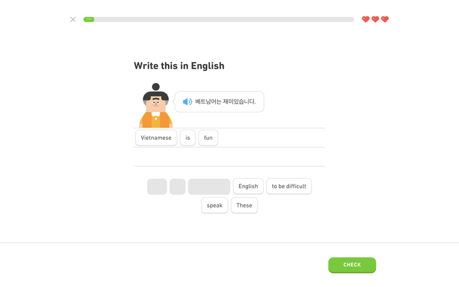
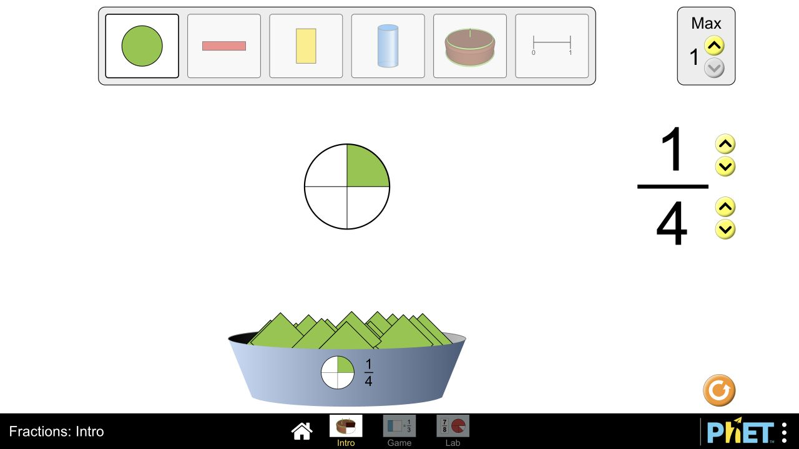
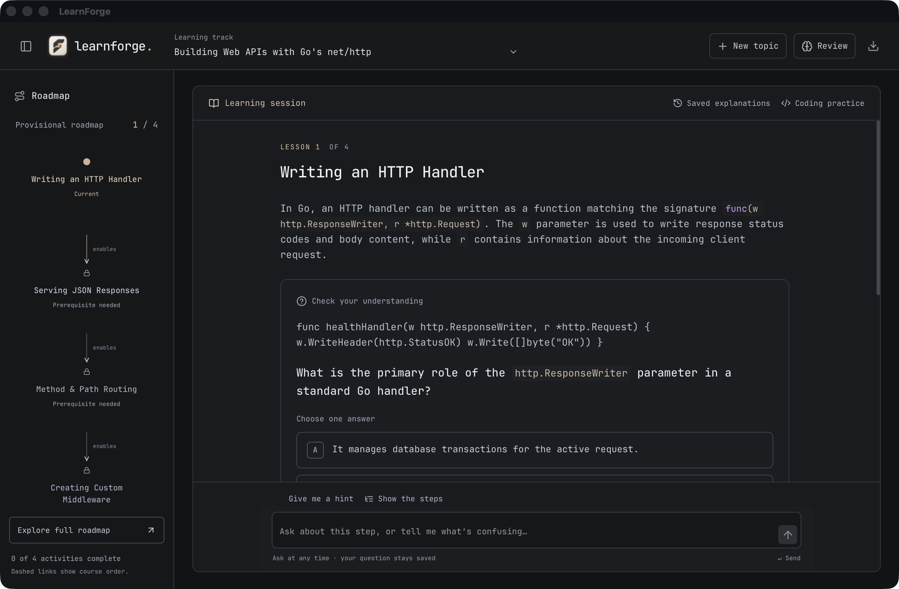

Guided visual explanations
A proposed teaching step that changes its representation to fit the idea. Explore a phrase, follow a request, or change a fraction—then try a new case.
Interactive concept preview. This is a proposal, not an implemented LearnForge feature. No AI calls or learning records are involved.
One idea, with something you can use
A respectful morning greeting
It is morning. You are greeting an older neighbor.
Compare a familiar and a respectful form
Káàárọ̀ can greet a peer or younger person. Ẹ káàárọ̀ adds respectful address, or addresses more than one person. These are meaning labels, not a literal word-for-word translation.
An older visitor arrives. Which welcome includes respectful address?
Read the request. Write the reply.
The handler receives information from the client and prepares a response.
r lets the handler read information that arrived with the request.
You need to send a 404 status to the client. Which parameter do you use?
More equal parts, a smaller single piece
The whole stays the same size. Only the number of equal parts changes.
The highlighted piece is one of four equal parts: one quarter.
Two equal-sized wholes are cut into thirds and sixths. Which single piece is larger?
What would make this worth building?
| Feature | Behavior | What to validate |
|---|---|---|
| Guided visuals | One meaningful relationship, with adjacent labels and an action. | Can the learner use the idea in a fresh case? |
| Editable preferences | Remember pace, explanation depth, examples and display choices. | Is it helpful without restricting formats or assigning a learner type? |
| Visible support | Record the hints and labels present during practice. | Can the learner later answer with fewer cues? |
| Clear pacing | Clarify, ask a follow-up and continue explicitly. | Does the learner feel oriented and in control? |
| Dependable rendering | Use tested visual forms, accessible controls and a text equivalent. | Does it work in the packaged app, including recovery from failures? |
The actual lesson would choose the useful representation. The example selector above exists to compare this product proposal across subjects; it is not a proposal for new teaching-mode tabs.
Preferences, evidence and reliable visual models
A 2024 learning-styles meta-analysis found a small average matching benefit but insufficient consistent, high-quality evidence for widespread style-matching. The product should offer adaptable support without assigning permanent “visual learner” categories.
Multimedia learning research supports directing attention and placing related information together. CAST's guidelines support multiple representations and ways to respond. These principles inform the proposal; they do not establish LearnForge's learning effectiveness.
Relevant LearnHarness discussions: learner profiles #206, visualization clarity #118, pacing #64, a continuous learning loop #158, and answer-length bias #221.



Content sources for the examples
- University of Georgia · Yorùbá greetings and respectful address
- Go standard library · ResponseWriter and Request
- PhET · Research and instructional design
The phrase labels illustrate meaning and use. Audio, pronunciation scoring, AI adaptation, saved preferences and long-term assessment are not implemented in this concept preview.